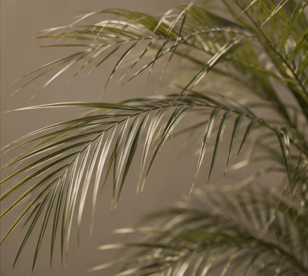

ONE PALM. MANY NAMES.
The California palm
made for smaller spaces.
The palm tree has always represented California living:
warm sunlight, open spaces, and a slower way of life.
But not every home has room for a full-size landscape palm.
Known as the Pygmy Date Palm, Dwarf Date Palm,
Roebelenii Palm, or by its botanical name
Phoenix roebelenii, this compact palm brings the same
iconic silhouette into apartments, studios, and everyday homes.
